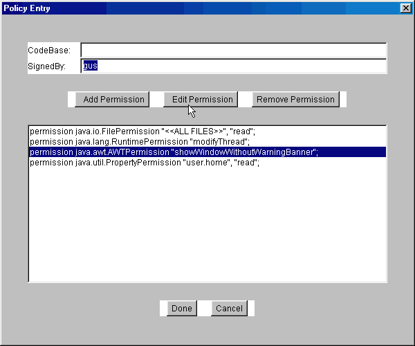
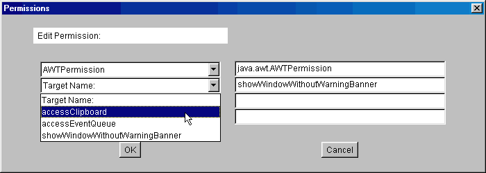

|
The default policy implementation, stores policies in flat files, with
a particular format :
#1. A policy file, is associated with a single keystore file, where the keys of a signer
may be stored. A single keystore entry, points to the keystore file to
be consulted when verifying signed code sources. The URL uses forward
slashes in the path, and is the file: URL relative to the location of
the policy file. The type defaults to Sun's "JKS" keystore format.
keystore "URL_to_keystore", "keystore_type";
#2. One or more grant statements,
that associate code from a particular source and / or code signed by a
trusted individual with one or more Permissions.
grant signedBy "gus" {
permission java.io.FilePermission("${user.home}${/}*","read");
permission java.io.FilePermission("${user.home}${/}temp${/}*.tmp","write");
}
Note: By enclosing system
properties, such as java.home, user.home
or file.separator within special syntax (curly
braces, preceded with a dollar sign) the runtime value of that system
property is substituted into your policy files :
| file:${java.home}/lib/ext/- |
specifies a codeBase URL of all class and
jar files in all subfolders in the lib\ext folder of the Java home
(installation) directory. |
| file:${user.home}/myclasses/* |
URL refers to all class and jar files in
the myclasses subfolder, of the user home directory (usually C:\Windows\ on a Win32 machine). |
| file:/home/adam |
all class files (not jar) in the home/adam
folder on a Unix machine. |
figure: granting permissions to a code source
in policytool.

A 'source' of code, is the combination of the URL
of the class file (the 'codebase' where the .class or .jar file is), and
the 'alias' associated with the digital signature
of signed code (Java archives may be signed using a private key).
If you specify more than one alias in the SignedBy
textfield, the code must be signed by both parties (signatures are AND'd
together), in order to qualify for the permissions listed. The SignedBy
field is optional in that, if it is omitted, it signifies "any signer".
It doesn't matter whether the code is signed or not or by whom.
Note: When specifying a codebase URL,
the symbol "*" can be used as a wildcard for all the class or
jar files in a particular folder. The symbol "-" can be used
as a placeholder for all files in the folder and all subfolders.
The codebase URL should follow the form protocol:path.
For example "http://java.sun.com/*" or "file:/C:/somepath/"
or even "ftp://ftp.domain.com/-" . A codebase value is a URL,
and uses forward slashes not back slashes.
figure: editing a Permission in a Policy file
entry.
 |